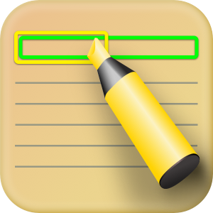

I'm Serge Bouts, a software engineer with 5 years of experience developing, testing and publishing iOS/macOS apps (and 15+ years of overall professional development experience).
In my spare time, I'm obsessed with implementing ideas of my own, and one of my key areas of interest I would single out creating effective user interfaces based on principles such as neumorphism. To unwind, I love to go jogging and skiing.
This free app provides basic icons for your resume & Curriculum vitae (CV) that will boost its visual effect. More than 50 high quality customizable icons available. Additionally, CVAssistant app features a radial gauge constructor to effectively visualize such things as your skill levels in your resume & CV.
Technologies used: Core Animation, Core Graphics
This tool will be useful to those who work with textual information, and it is an advanced way to create comments or notes on pieces of text. It differs from most existing note taking programs in that it allows you to comment on overlapping areas of text. To do this, the app provides frames around the text being commented, which can be different colors and are called notes in the app. Moreover, notes can be assigned to a category, which are stored in their own hierarchy, allowing you to build your own knowledge base around your saved notes.
Otherwise, Remarker is simply a platform for collecting notes. It allows advanced searches for both notes and remarks. It also allows you to store your database in iCloud, which is useful as a backup tool as well as a means of sharing the database between devices.
Technologies used: Core Animation, Core Text, Text Kit, Core Data, CloudKit
Here are some of the ideas of mine that I introduced in the projects of my own.
It uses the metaphor of the sphere as a tool with which the user can choose the desired color.
It uses various animations and 3D effects (depth and shadings) to create a visual metaphor of (resembles and operates/behaves like) a deck of playing cards and their unfolding, to visually represent a collection of elements as well as navigate through them.
It's a way of to go beyond the limits of
This tool will be useful to those who work with textual information, and it is an advanced way to create comments or notes on pieces of text. It differs from most existing note taking programs in that it allows you to comment on overlapping areas of text. To do this, the app provides frames around the text being commented, which can be different colors and are called notes in the app. Moreover, notes can be assigned to a category, which are stored in their own hierarchy, allowing you to build your own knowledge base around your saved notes.
Otherwise, Remarker is simply a platform for collecting notes. It allows advanced searches for both notes and remarks. It also allows you to store your database in iCloud, which is useful as a backup tool as well as a means of sharing the database between devices.
Technologies used: Core Animation, Core Text, Text Kit, Core Data, CloudKit